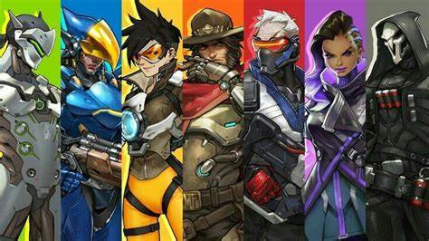

Si vous êtes plutôt du genre à vouloir tirer sur tout ce qui bouge, vous devriez plutôt tenter le rôle de DPS. Vous pouvez soit utiliser un sniper qui tirera à distance comme Fatale, un semi-tank comme Faucheur qui pourra encaisser quelques coups tout en causant de lourds dégâts, ou bien une DPS très rapide comme Tracer. Dans tous les cas, la précision est importante ici : n'oubliez pas de viser la tête de vos ennemis !
Mei
Echo
Symmetra
Cassidy
Tracer
Torbjorn
Sombra
Hanzo
Soldier 76
Sojourn
Reaper
Junkrat
Pharah
Genji
Widowmaker
Bastion
Ashe
